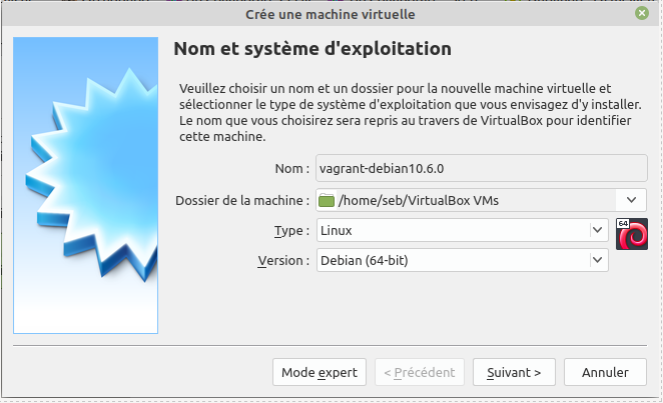
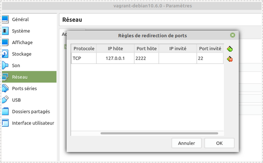
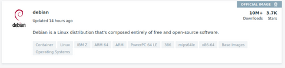

Projet 03 - Créez votre environnement de travail local
Posted on Mon 07 December 2020 in Accueil
Le but de ce premier "vrai" projet du parcours "Expert DevOps" d'OpenClassRooms est de mettre en place un environnement de développement de manière automatique en local sur notre poste. En effet, la démarche DevOps est constituée de nombreuses tâches, au service des différent pôles informatiques, développeurs, exploitation, testing, etc. C'est pourquoi il est important de pouvoir créer un environnement qui, à l'image des serveurs cibles, permet aux développeurs de travailler sur un environnement qui reproduit les conditions dans lesquelles leur code fonctionnera.
Nous vous proposons ici deux méthodes pour utiliser une machine virtuelle sous Vagrant :
De plus, nous vous présenterons une troisième partie sur docker et notre premier Dockerfile
Utiliser une machine entièrement fonctionnelle
Prérequis
- Git ~> 2.20
- Vagrant ~> 2.2.6
- Plugin scp de vagrant :
vagrant plugin install vagrant-scp - Plugin vbguest de vagrant :
vagrant plugin install vagrant-vbguest - VirtualBox ainsi que son pack d'extension ~> 6.1.16
Installation de la machine virtuelle "vierge"
- Créer un repertoire sur poste, par exemple "vagrant" :
mkdir ~/vagrant - Se déplacer dans le répertoire "vagrant" :
cd ~/vagrant - Récupérer la dernière version du repository en lançant la commande suivante :
git clone --depth 1 https://github.com/Ricky1981/OpenClassRooms_Projet3_Vagrant.git . - Lancer la construction via la commande
vagrant up - Après un certain temps, la machine virtuelle est créée et il vous est possible de prendre la main à distance en ssh via la commande
vagrant ssh(si vous souhaitez une autre méthode de connection, merci de consulter la section suivante)
Test des différents outils sur la machine virtuelle
Les composants du tableaux ci-dessous sont les composants qui ont été ajouté dans le Vagrantfile et ne proviennent donc pas de l'image par défaut. Toutes les commandes ci-dessous sont à faire une fois la connection SSH sur l'hôte distant est opérationnel :
| Composant | Commande | Retour |
|---|---|---|
| Editeur de texte | vim --version |
VIM - Vi IMproved 8.1 |
| Ansible | ansible --version |
ansible 2.9.15 |
| Docker | docker --version |
Docker version 19.03.14 |
Configuration SSH
Ce paragraphe vous propose de configurer SSH sur votre poste afin d'utiliser la façon commune à l'utilisation de la commande ssh.
Vagrant se connecte parfaitement via la commande vagrant ssh.
Cependant, si vous souhaitez utiliser la commande ssh [user]@[IP], il faudra ajouter des informations dans le fichier ~/.ssh/config.
Ci-dessous les étapes à respecter :
1°/ Nous consultons la configuration ssh de vagrant via la commande vagrant ssh-config :
Host default
HostName 127.0.0.1
User vagrant
Port 2222
UserKnownHostsFile /dev/null
StrictHostKeyChecking no
PasswordAuthentication no
IdentityFile /home/seb/.vagrant.d/insecure_private_key
IdentitiesOnly yes
LogLevel FATAL`
2°/ Vagrant nous affiche alors la configuration qu'il utilise. Comme on connait l'adresse IP de la machine et le chemin vers sa clé privée, on peut se rendre dans le fichier ~/.ssh/config pour ajouter une configuration :
Host 192.168.33.10
User vagrant
Port 22
UserKnownHostsFile /dev/null
StrictHostKeyChecking no
PasswordAuthentication no
IdentityFile /home/seb/.vagrant.d/insecure_private_key
IdentitiesOnly yes
LogLevel FATAL
La configuration sera ainsi utilisée avec la bonne clé privée et la connexion peut être établie via la commande ssh [user]@[IP]
Créer vous-même votre environnement
Ici, nous allons créer notre premiere version du fichier “Vagrantfile”. Les prérequis sont les mêmes que pour la première partie de cette page Pour cela, nous lançons juste la commande suivante afin de générer le fichier “initiale”
$ vagrant init
A `Vagrantfile` has been placed in this directory. You are now ready to `vagrant up` your first virtual environment! Please read the comments in the Vagrantfile as well as documentation on
`vagrantup.com` for more information on using Vagrant.
Création du Vagrantfile de ma distribution
Mon choix s’est porté sur un Debian 10.6.0 en version LXQt Desktop car légère
Création de la VM dans VirtualBox
Notre machine s’intitulera “vagrant-debian10.6.0”

L’utilisateur “vagrant” est créé sur cette VM avec login = mot de passe
Une fois l’OS installé sur cette VM, on configure la redirection de port :

Enfin, lancer la VM et se connecter dessus. Passer ensuite en root et installer SSH ainsi que sudo via un terminal :
vagrant@vagrant-debian10:~$ su
Mot de passe :
root@vagrant-debian10:~# apt-get install ssh sudo
Nous rajoutons également le package suivant afin de pouvoir ajouter des repository si besoin par la suite (apt-add-repository) car par défaut, n’est pas installé :
sudo apt-get install software-properties-common
On va ensuite modifier la configuration du fichier sudoers pour autoriser tous les utilisateurs du groupe admin à sudoer sans mot de passe.
# visudo
Nous ajoutons l’utilisateur vagrant :
vagrant ALL=(ALL) NOPASSWD: ALL
Enfin, on teste notre utilisateur vagrant afin de vérifier que le mot de passe ne soit plus necessaire.
# exit
$ sudo ls
Ensuite :
mkdir ~/.ssh
$ touch authorized_keys
Puis ajouter dans authorized_keys la clé publique :
ssh-rsa AAAAB3NzaC1yc2EAAAABIwAAAQEA6NF8iallvQVp22WDkTkyrtvp9eWW6A8YVr+kz4TjGYe7gHzIw+niNltGEFHzD8+v1I2YJ6oXevct1YeS0o9HZyN1Q9qgCgzUFtdOKLv6IedplqoPkcmF0aYet2PkEDo3MlTBckFXPITAMzF8dJSIFo9D8HfdOV0IAdx4O7PtixWKn5y2hMNG0zQPyUecp4pzC6kivAIhyfHilFR61RGL+GPXQ2MWZWFYbAGjyiYJnAmCP3NOTd0jMZEnDkbUvxhMmBYSdETk1rRgm+R4LOzFUGaHqHDLKLX+FIPKcF96hrucXzcWyLbIbEgE98OHlnVYCzRdK8jlqm8tehUc9c9WhQ== vagrant insecure public key
Puis on donne les bons droits :
$ chmod 0700 ~/.ssh
$ chmod 0600 ~/.ssh/authorized_keys
Il faut aussi installer la VBoxGuestAddition de notre version sinon problème lors du mount (voir https://www.vagrantup.com/docs/providers/virtualbox/boxes.html)
wget http://download.virtualbox.org/virtualbox/6.1.16/VBoxGuestAdditions_6.1.16.iso
sudo mkdir /media/VBoxGuestAdditions
sudo mount -o loop,ro VBoxGuestAdditions_6.1.16.iso /media/VBoxGuestAdditions
sudo sh /media/VBoxGuestAdditions/VBoxLinuxAdditions.run
rm VBoxGuestAdditions_6.1.16.iso
sudo umount /media/VBoxGuestAdditions
sudo rmdir /media/VBoxGuestAdditions
Si erreur de type : “Kernel header not found for targert kernel 4.19... Please install them and execute /sbin/rcvboxadd setup” Faire :
sudo apt-get install build-essential linux-headers-`uname -r` dkms
et on relance le VBoxLinuxAdditons.run Quand tout est OK, on se déconnecte et on éteint la machine.
Packaging
Nous avons donc une machine virtuelle nommée vagrant-debian10.6.0 dans Virtualbox. Nous allons la packager pour en faire une box. On se place dans le repertoire suivant : ~/Bureau/ownCloud/OpenClassRoom/Projet_03/vagrantBox/
Puis on lance la commande suivante :
$ vagrant package --base vagrant-debian10.6.0
Le paramètre base est le nom de la VM dans VirtualBox. Un traitement un peu long va se produire et à la fin, vous obtiendrez un fichier package.box. Ce fichier, rangez le dans un endroit accessible à vos futures config vagrant : soit en le laissant dans ce dossier, soit en la mettant sur un serveur http.
$ vagrant package --base vagrant-debian10.6.0
==> vagrant-debian10.6.0: Exporting VM...
==> vagrant-debian10.6.0: Compressing package to: /home/seb/Bureau/ownCloud/OpenClassRoom /Projet_03/vagrantBox/
On renomme le fichier package.box pour retrouver le nom de notre VM à savoir vagrant-debian10.6.0.box
$ mv package.box vagrant-debian10.6.0.box
Test
On modifie le VagrantiFile initial comme suit :
Vagrant.configure("2") do |config|
# The most common configuration options are documented and commented below .
# For a complete reference, please see the online documentation at
# https://docs.vagrantup.com.
# Every Vagrant development environment requires a box. You can search for
# boxes at https://vagrantcloud.com/search.
config.vm.box = "vagrant-debian10.6.0"
config.vm.box_url = "file:///home/seb/Bureau/ownCloud/OpenClassRoom/Projet_03/vagrantBox/vagrant-debian10.6.0.box"
Et test du vagrant :
$ vagrant up
Notre premier fichier Docker
Lancement du Dockerfile
Une fois connecté sur la machine virtuelle "vagrant" en SSH que nous venons de créer, veuillez lancer les actions suivantes :
- Vérifier que nous nous situons bien dans le HOME de l'utilisateur vagrant :
cd ~ - Récupérer la dernière version du repository dans lequel toutes les sources sont présentes en lançant la commande suivante :
git clone --depth 1 https://github.com/Ricky1981/OpenClassRooms_Projet3_Docker.git - Construire le conteneur à partir du DockerFile :
docker build -t image_perso OpenClassRooms_Projet3_Docker/ - Lancer le conteneur :
docker run -d -p 8080:80 --name Projet03 image_perso - Vérifier que le conteneur est bien actif :
docker ps - Revenir sur sa machine local et tester l'URL suivante : http://192.168.33.10:8080
- Si vous souhaitez arreter le conteneur :
docker stop Projet03
Explication du fichier
Voici le fichier Dockerfile du repository que vous avez recuperé. Nous détaillerons toutes les lignes de ce premier fichier très simple à comprendre
FROM debian:stable-slim
RUN apt update && \
apt install -y nginx
COPY ./index.html /var/www/html/
EXPOSE 80
CMD ["nginx", "-g", "daemon off;"]
Ligne "FROM"
Cette ligne nous permet de recuperer l'image debian sur le site DockerHub. Vous pouvez suivre les étapes suivantes pour comprendre comment rechercher une image docker :
Sur DockerHub faire un filtre sur les images officiels afin de pouvoir récuperer l’image Debian :

Cliquer sur le lien
Une fois sur la page suivante choisir sa version. De mon côté, je décide de prendre la version stable :

Ligne "RUN"
Cette ligne nous permet de lancer l'installation des package dont nous avons besoin. En l'occurence ici nous avons juste besoin de NGINX.
Ligne "COPY"
Dans le repository que vous venez de recuperer, le fichier index.html est un fichier "customisé" afin de verifier que notre installation fonctionne correctement. Ici, nous copions juste ce fichier index.html que nous plaçons dans le repertoire que NGINX utilisera à savoir /var/www/html
Nous aurions pu ici aller plus loin en créant un Volume afin de pouvoir l'alimenter depuis notre poste local.
Ligne "EXPOSE"
Ici, comme son nom l'indique nous souhaitons "Exposer" le port 80 de notre conteneur. Sans cette ligne de commande, nous ne pourrons pas accéder à notre page HTML.
Ligne "CMD"
Nous souhaitons ici indiqué à docker que nous ne souhaitons pas que le daemon NGINX soit lancé lors de l'appel du conteneur Docker. En effet, c'est Docker qui portera notre site Web. Il ne faut donc pas "doublonner" les actions.